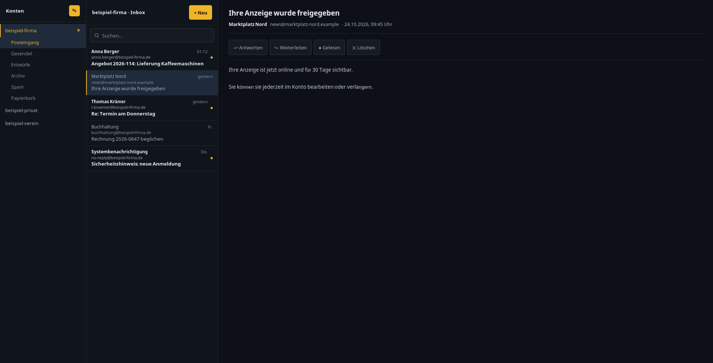

Der weltweit einzige grafische Client für himalaya. Schlank, dunkel, ohne Ballast — und mit einem Verbindungs-Zahnrad, das die Postfächer auch dort lässt, wo sie hingehören.
Diese Seite beschreibt ehrlich, was die Anwendung kann — und was noch nicht. Keine Werbeversprechen.
himalaya ist ein Kommandozeilen-Programm, das E-Mail-Konten verwaltet: lesen, antworten, verschieben, Flags setzen. Sehr mächtig, sehr schnell — aber unsichtbar. Bis jetzt gab es dafür keine Oberfläche.
Smartys Himalaya GUI legt eine ruhige, dunkle Oberfläche darüber. Keine Cloud dazwischen, kein Konto bei einem Anbieter: Die Anwendung spricht direkt mit dem himalaya auf deinem Rechner — oder auf einem anderen, wenn deine Postfächer dort liegen.
Der Installer enthält alles: das Programm, die Mail-Engine himalaya und die Oberfläche. Auf dem Zielrechner muss nichts vorinstalliert sein — kein Python, kein himalaya, kein Zusatzpaket.
Deinstallieren: Einstellungen → Apps → Smartys Himalaya GUI. Die Konten-Einstellungen bleiben dabei erhalten.
sudo dpkg -i smartys-himalaya-gui_0.1.0_all.deb
sudo apt-get install -fDanach steht die Anwendung im Anwendungsmenü. Zusätzlich läuft sie als Dienst im Hintergrund und ist im Browser unter http://127.0.0.1:8770 erreichbar.
Wer lieber ohne Paket arbeitet:
git clone https://github.com/smartonaut/smartys-himalaya-gui
cd smartys-himalaya-gui
pip install --user .
python3 -m smartys_mailBeim ersten Start ist die Liste leer und der Assistent öffnet sich von selbst. Er fragt nur, was er wirklich wissen muss.
| Feld | Was hinein gehört |
|---|---|
| Name | Beliebig, nur für dich — zum Beispiel privat oder firma |
| Adresse | Deine vollständige E-Mail-Adresse |
| Anzeigename | Was Empfänger sehen, wenn du schreibst |
| Passwort | Bei Gmail ein App-Passwort, nicht das Kontopasswort |
Google lässt Programme nur mit einem eigenen Passwort an das Postfach — das normale Passwort funktioniert nicht. Das ist kein Fehler der Anwendung.
Bei allen anderen Anbietern reicht in der Regel das normale Passwort. Die Serverdaten trägt der Assistent selbst ein, sobald die Adresse steht.
Das ist der Punkt, der diese Anwendung von anderen unterscheidet. Es gibt zwei Betriebsarten — umschaltbar über das Zahnrad neben dem Stift.
himalaya liegt neben dem Programm und verwaltet die Postfächer direkt. Der Normalfall für einen einzelnen Arbeitsplatz.
Die Konten stehen in %APPDATA%\himalaya\config.toml (Windows) beziehungsweise ~/.config/himalaya/config.toml (Linux).
Sinnvoll, wenn deine Postfächer zentral liegen — etwa auf einem Heimserver — und du von mehreren Geräten darauf zugreifen willst. Die Zugangsdaten bleiben dann an einer einzigen Stelle. Die anderen Rechner brauchen nur einen SSH-Schlüssel, kein einziges Passwort.
benutzer@192.168.1.50command -v, ~/.local/bin, ~/.cargo/bin, /usr/local/bin)
Warum nicht einfach die config.toml kopieren? Weil darin die Postfach-Passwörter im Klartext stehen. Wer sie auf fünf Rechner verteilt, hat sie an fünf Stellen liegen. Über SSH bleibt es bei einer.
Damit die Verbindung ohne Eingabe klappt, braucht der Zielrechner deinen öffentlichen Schlüssel:
ssh-keygen -t ed25519 # nur, wenn noch keiner existiert
ssh-copy-id benutzer@zielrechnerBeim ersten Verbinden fragt die Anwendung einmal nach der Bestätigung des Host-Schlüssels. Ändert sich der Schlüssel später, verweigert sie die Verbindung — das ist Absicht und schützt vor Zwischenschaltern.

%APPDATA% beziehungsweise ~/.config — nicht im Cache, wo sie beim Aufräumen verschwinden| Punkt | Details |
|---|---|
| Basis | himalaya (Rust), aufgerufen über seine JSON-Schnittstelle |
| Oberfläche | Web-Technik im eigenen Fenster (WebView2 unter Windows, WebKit unter Linux) |
| Python | Nicht nötig — im Windows-Programm enthalten |
| Netzwerk | Nur 127.0.0.1. Die Oberfläche ist von außen nicht erreichbar — bewusst, sie hat keine eigene Anmeldung |
| Speicherort | Windows: %APPDATA%\smartys-himalaya-gui · Linux: ~/.config/smartys-himalaya-gui |
| Lizenz | MIT — Quelltext offen, kommerzielle Nutzung erlaubt |
| Quelltext | github.com/smartonaut/smartys-himalaya-gui |
Fehler gefunden, Anbieter der noch fehlt, ein Wunsch? Das Forum ist der schnellste Weg — dort landet es direkt bei mir.
Ins Forum